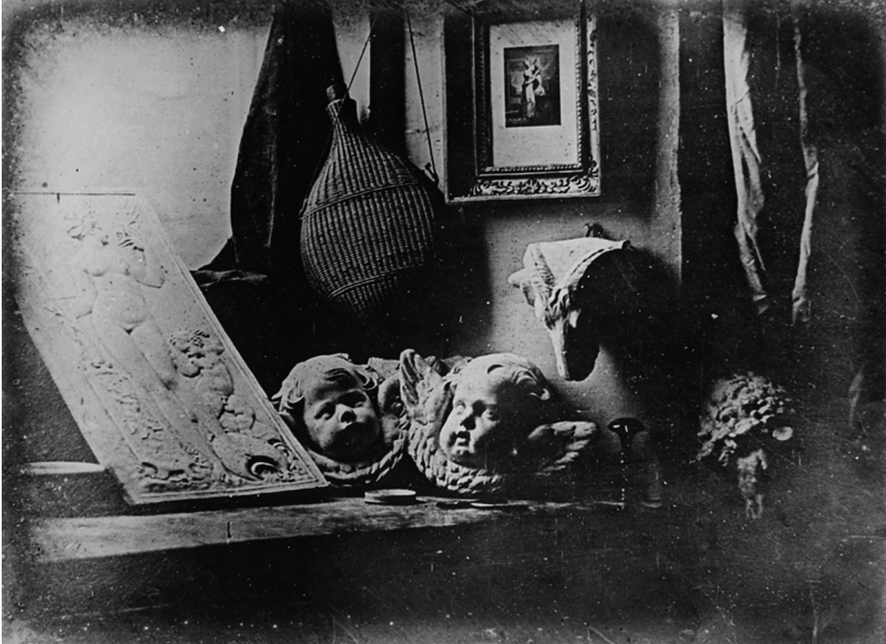

Daguerreotype: Fotoğrafçılığın Tarihindeki İlk Büyük Devrim
Daguerreotype, fotoğrafçılık dünyasında çığır açan ve kalıcı görüntü elde etme konusunda devrim yaratan bir tekniktir. 1839 yılında Fransız mucit Louis Daguerre tarafından geliştirilmiş olan bu yöntem, o dönemde hem bilimsel hem de sanatsal anlamda büyük bir etki yaratmıştır. İlk defa geniş kitlelerle buluşan kalıcı fotoğraf çekme yöntemi olan Daguerreotype, modern fotoğrafçılığın temel taşlarından biri olarak kabul edilir ve bu devrim niteliğindeki buluş, fotoğrafçılığın hızlı bir şekilde yayılmasına öncülük etmiştir.
1838 tarihli Boulevard du Temple fotoğrafı, Paris sokak manzarasının bir görüntüsüdür ve Louis Daguerre tarafından üretilen en eski Daguerreotype plakalarından biridir. Görüntü ıssız bir sokağın görüntüsü gibi görünse de, yaygın olarak bir insanın görüntüsünü içeren ilk fotoğraf olduğu düşünülmektedir.

Daguerreotype Nasıl Çalışır?
Daguerreotype yöntemi, gümüş kaplı bakır bir levha kullanarak kalıcı görüntü elde etme prensibine dayanır. Levha, iyot buharına maruz bırakılarak ışığa duyarlı hale getirilir. Özel bir kamerada birkaç dakika süren pozlama işleminden sonra, levha cıva buharı ile işlenerek görüntü görünür hale gelir. Son olarak, sabitleme işlemi tuzlu su ya da sodyum tiyosülfat ile yapılır ve bu sayede görüntü kalıcı hale getirilir. Elde edilen fotoğraf, net ve detaylıdır, ancak görüntü metal bir yüzey üzerine kaydedildiği için farklı açılardan bakıldığında aynaya benzer bir etki yaratır.
İlk Ticari Fotoğraf Yöntemi
Daguerreotype, ticari anlamda kullanılan ilk başarılı fotoğraf tekniğidir. Fransız Hükümeti, bu buluşu halka açık bir şekilde duyurarak fotoğrafçılığın geniş kitlelere ulaşmasını sağlamıştır. 1840’larda Avrupa ve Amerika’da Daguerreotype stüdyoları hızla çoğalmaya başlamış ve insanlar ilk kez portre fotoğraflarını çektirme fırsatı yakalamıştır. O dönemin en popüler portre çekim yöntemi olan Daguerreotype, kısa sürede hem sanatsal hem de ticari başarı elde etmiştir.

Daguerreotype ile Portre Çekimi
Daguerreotype’ın uzun pozlama süreleri, fotoğraflarda insanların ciddi ve hareketsiz görünmesine neden oluyordu. Pozlama süresi genellikle birkaç dakika sürdüğü için, çekilen kişilerin sabit durmaları gerekiyordu. Bu da portrelerde sert ve durağan ifadelerin yaygınlaşmasına neden oldu. Ancak bu yöntem, ilk kez sıradan insanların da kalıcı bir portreye sahip olmasını sağladı. Özellikle orta sınıf insanlar için ekonomik bir seçenek olması, Daguerreotype’ın hızla yayılmasına katkı sağladı.

Daguerreotype’ın Avantajları ve Zorlukları
Daguerreotype tekniği, detaylı ve yüksek çözünürlüklü görüntüler elde edilmesine olanak tanısa da bazı zorluklar içeriyordu. Kimyasal işlemler oldukça karmaşık ve tehlikeliydi. Özellikle cıva buharının kullanılması, fotoğrafçıların sağlığını riske atıyordu. Ayrıca, her bir görüntü doğrudan metal bir levha üzerine kaydedildiği için çoğaltılamıyordu. Yine de, Daguerreotype’ın sağladığı kaliteli görüntüler ve ticari başarısı, fotoğrafçılık dünyasında büyük bir adım olmuştur.
Fotoğrafçılıkta Yeni Bir Dönem
Daguerreotype, fotoğrafçılıkta yeni bir dönemin kapılarını açtı. 19. yüzyılın ortalarına doğru, William Henry Fox Talbot’un geliştirdiği negatif-pozitif süreçlerin ortaya çıkmasıyla Daguerreotype’ın popülaritesi azalmaya başladı. Talbot’un kalotip yöntemi, fotoğrafların çoğaltılabilir olmasını sağlıyordu ve bu, ticari fotoğrafçılıkta daha fazla talep görmeye başladı. Ancak Daguerreotype, ilk ticari fotoğrafçılık yöntemi olarak tarihteki yerini korudu.

Günümüzde Daguerreotype
Günümüzde Daguerreotype, tarihsel bir değere sahip nadir fotoğrafçılık tekniklerinden biri olarak kabul edilir. Orijinal Daguerreotype fotoğrafları, koleksiyoncular tarafından büyük ilgi görür ve oldukça değerlidir. Ayrıca bazı sanatçılar, bu tarihi yöntemi modern fotoğrafçılıkta yeniden canlandırmak için çalışmalar yapmaktadır. Böylece Daguerreotype, günümüzde de fotoğraf sanatına ilham vermeye devam etmektedir.
Daguerreotype’ın Kalıcı Mirası
Daguerreotype, modern fotoğrafçılığın doğuşunu temsil eder. Louis Daguerre’in bu buluşu, insanlara ilk kez kalıcı, detaylı ve gerçekçi görüntüler yakalama fırsatı sundu. Bu yöntem, fotoğrafçılık sanatının hızla yayılmasına ve ticari bir sektör haline gelmesine büyük katkı sağlamıştır. Daguerreotype’ın getirdiği yenilikler, bugünkü fotoğraf makinelerinin ve tekniklerinin temelini oluşturmuştur.
Daguerreotype ve Sanat Dünyası
Daguerreotype, sadece ticari anlamda değil, aynı zamanda sanatsal açıdan da büyük bir etki yarattı. Ressamlar ve sanatçılar, bu yeni teknolojiyi kullanarak portre ve manzara çalışmalarını desteklediler. O dönemde birçok ünlü sanatçı, eserlerinde Daguerreotype’ın sağladığı detaylardan ilham almıştır. Böylece fotoğrafçılık, sanat dünyasında da önemli bir yer edinmiştir.
Daguerreotype, fotoğrafçılığın tarihinde dönüm noktalarından biri olarak kabul edilir. Işığın metal üzerine sabitlenmesiyle elde edilen bu kalıcı görüntüler, hem bilimsel hem de sanatsal açıdan büyük bir başarıdır. Louis Daguerre’in geliştirdiği bu teknik, günümüz modern fotoğraf makinelerinin temelini atmış ve fotoğrafçılığı bir sanat ve ticaret dalı haline getirmiştir.